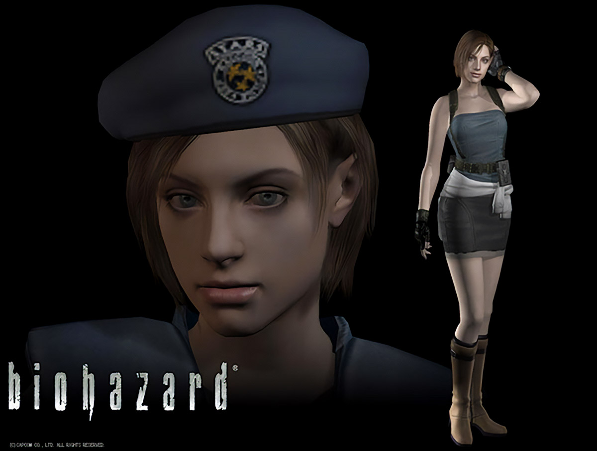

 Jill Valentine es una agente de Operaciones Especiales
Americana (SOA) de la Alianza de Seguridadd de Bioterrorismo, de la cual es cofundadora y miembro original. Es una respetada
operadora de alto rango, debido a su compromiso en erradicar el bioterrorismo y su supervivencia
en medio de los brotess biopeligrosos en el condado de Arklay en 1998.
Este personaje es mi favorito gracias a todas sus apariciones a lo largo de la saga. Su personalidad es increible, es muy habilidosa ademàs de importante en la historia.